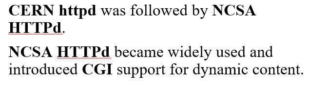

Web Servers: Evolution of a Core WWW Component
History of Web Servers
History of Web Servers
Origins at CERN
NCSA HTTPd

Birth of Apache
Microsoft IIS
Rise of Nginx
- 1990 - First Web Server at CERN
- 1993 - NCSA HTTPd
- 1995 - Apache Released
- 1995 - Microsoft IIS Introduced
- 2004 - Nginx Released